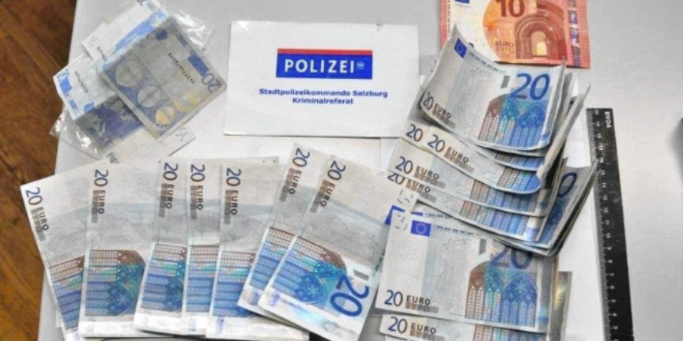
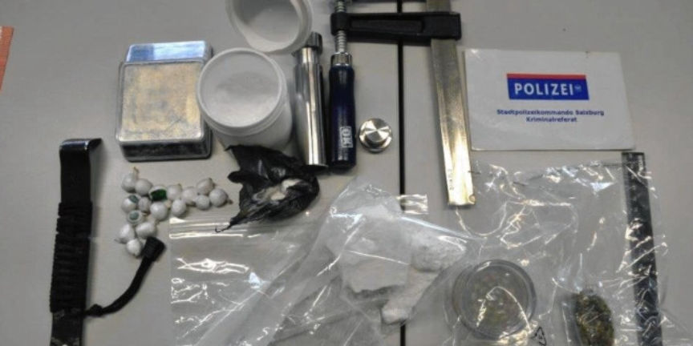
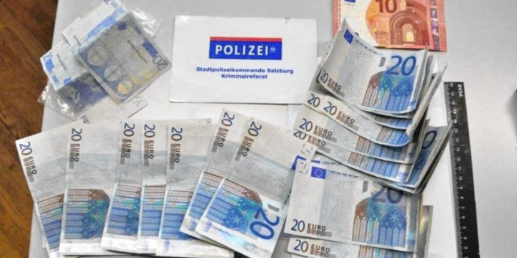
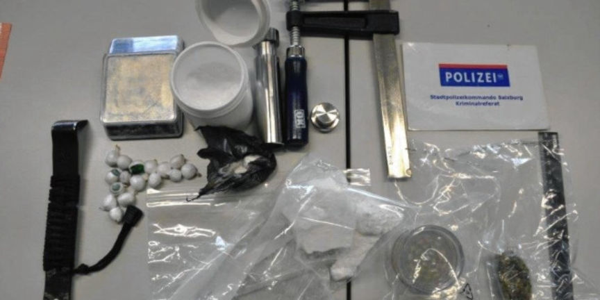

Austrian Teen Arrested for Using Counterfeit Euros
~1 min read | Published on 2019-05-13, tagged Counterfeits, Currency using 187 words.
Law enforcement in Salzburg, Austria, arrested a 19-year-old for purchasing counterfeit euros from the darkweb and spending them at local businesses. In addition to the counterfeit currency charges, the teenager faces charges for possessing almost 200 grams of cocaine.

The police in the Austrian city of Salzburg were alerted in early May to several stores that had received counterfeit currency from the same individual. The final purchase, a pizza from a pizza shop that delivered, ended in the suspect’s arrest. They called the police and gave the police the suspect’s address.
They obtained a search warrant. During the course of a house search, the investigators in his apartment found another 16 counterfeit 20-euro notes and nearly 200 grams of cocaine. The police suspect the teenager had purchased the notes from a vendor on the darkweb.

However, during the interrogation, the suspect stated that he had obtained the counterfeits from a different teenager in Salzburg. The evidence linking the counterfeits to the darkweb has not been publicly unveiled by the police. A report from the National Bank on the counterfeit banknotes is currently pending.
Source: Krone.at
Austrian Police Announcement

Counterfeit Euros
The police in the Austrian city of Salzburg were alerted in early May to several stores that had received counterfeit currency from the same individual. The final purchase, a pizza from a pizza shop that delivered, ended in the suspect’s arrest. They called the police and gave the police the suspect’s address.
They obtained a search warrant. During the course of a house search, the investigators in his apartment found another 16 counterfeit 20-euro notes and nearly 200 grams of cocaine. The police suspect the teenager had purchased the notes from a vendor on the darkweb.

Counterfeit Euros and Cocaine
However, during the interrogation, the suspect stated that he had obtained the counterfeits from a different teenager in Salzburg. The evidence linking the counterfeits to the darkweb has not been publicly unveiled by the police. A report from the National Bank on the counterfeit banknotes is currently pending.
Source: Krone.at
Austrian Police Announcement